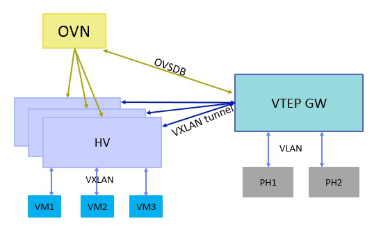

OVN实践
OVN Logical Flow
OVN逻辑流表会由ovn-northd分发给每台机器的ovn-controller，然后ovn-controller再把它们转换为物理流表。
更多参考
OVN安全组
使用OVN只需要把VM的tap直接连接到br-int（而不是现在需要多加一层Linux Bridge），并使用OVS conntrack根据连接状态进行匹配，提高了流表的查找速度，同时也支持有状态防火墙和NAT。
# allow all ip traffic from port "ls1-vm1" on switch "ls1" and allowing related connections back in
ovn-nbctl acl-add ls1 from-lport 1000 "inport == \"ls1-vm1\" && ip" allow-related
# allow ssh to ls1-vm1
ovn-nbctl acl-add ls1 to-lport 999 "outport == \"ls1-vm1\" && tcp.dst == 22" allow-related
# block all IPv4/IPv6 traffic to ls1-vm1
ovn-nbctl acl-add ls1 to-lport 998 "outport == \"ls1-vm1\" && ip" drop
# using address sets
ovn-nbctl create Address_Set name=wwwServers addresses=172.16.1.2,172.16.1.3
ovn-nbctl create Address_Set name=www6Servers addresses=\"fd00::1\",\"fd00::2\"
ovn-nbctl create Address_Set name=macs addresses=\"02:00:00:00:00:01\",\"02:00:00:00:00:02\"
ovn-nbctl create Address_Set name=dmz addresses=\"172.16.255.130/31\"
# allow from dmz on 3306
ovn-nbctl acl-add inside to-lport 1000 'outport == "inside-vm3" && ip4.src == $dmz && tcp.dst == 3306' allow-related
# clean up
ovn-nbctl acl-del dmz
ovn-nbctl acl-del inside
ovn-nbctl destroy Address_Set dmz
更多参考
OVN L2
OVN L2功能包括
- L2 switch
- L2 ACL
- Supports software-based L2 gateways
- Supports TOR (Top of Rack) based L2 gateways that implement the hardware_vtep schema
- Can provide networking for both VMs and containers running inside of those VMs, without a second layer of overlay networking
# Create the first logical switch and its two ports.
ovn-nbctl ls-add sw0
ovn-nbctl lsp-add sw0 sw0-port1
ovn-nbctl lsp-set-addresses sw0-port1 "00:00:00:00:00:01 10.0.0.51"
ovn-nbctl lsp-set-port-security sw0-port1 "00:00:00:00:00:01 10.0.0.51"
ovn-nbctl lsp-add sw0 sw0-port2
ovn-nbctl lsp-set-addresses sw0-port2 "00:00:00:00:00:02 10.0.0.52"
ovn-nbctl lsp-set-port-security sw0-port2 "00:00:00:00:00:02 10.0.0.52"
# Create the second logical switch and its two ports.
ovn-nbctl ls-add sw1
ovn-nbctl lsp-add sw1 sw1-port1
ovn-nbctl lsp-set-addresses sw1-port1 "00:00:00:00:00:03 192.168.1.51"
ovn-nbctl lsp-set-port-security sw1-port1 "00:00:00:00:00:03 192.168.1.51"
ovn-nbctl lsp-add sw1 sw1-port2
ovn-nbctl lsp-set-addresses sw1-port2 "00:00:00:00:00:04 192.168.1.52"
ovn-nbctl lsp-set-port-security sw1-port2 "00:00:00:00:00:04 192.168.1.52"
# Create a logical router between sw0 and sw1.
ovn-nbctl create Logical_Router name=lr0
ovn-nbctl lrp-add lr0 lrp0 00:00:00:00:ff:01 10.0.0.1/24
ovn-nbctl lsp-add sw0 sw0-lrp0 \
-- set Logical_Switch_Port sw0-lrp0 type=router \
options:router-port=lrp0 addresses='"00:00:00:00:ff:01"'
ovn-nbctl lrp-add lr0 lrp1 00:00:00:00:ff:02 192.168.1.1/24
ovn-nbctl lsp-add sw1 sw1-lrp1 \
-- set Logical_Switch_Port sw1-lrp1 type=router \
options:router-port=lrp1 addresses='"00:00:00:00:ff:02"'
# Create ovs port
# Create ports on the local OVS bridge, br-int. When ovn-controller
# sees these ports show up with an "iface-id" that matches the OVN
# logical port names, it associates these local ports with the OVN
# logical ports. ovn-controller will then set up the flows necessary
# for these ports to be able to communicate each other as defined by
# the OVN logical topology.
ovs-vsctl add-port br-int lport1 -- set interface lport1 type=internal \
-- set Interface lport1 external_ids:iface-id=sw0-port1
ovs-vsctl add-port br-int lport2 -- set interface lport2 type=internal \
-- set Interface lport2 external_ids:iface-id=sw0-port2
更多参考
OVN L3
OVN L3的功能包括
- IPv4/IPv6分布式L3路由
- ARP and IPv6 Neighbor Discovery suppression for known IP-MAC bindings
- L3 ACL
- Native support for NAT and load balancing using OVS connection tracking
- Native fully distributed support for DHCP
- Supports L3 gateways from logical to physical networks
# SNAT
# create snat rule which will nat to the edge1-outside interface
ovn-nbctl -- --id=@nat create nat type="snat" logical_ip=172.16.255.128/25 \
external_ip=10.127.0.129 -- add logical_router edge1 nat @nat
更多参考
OVN VTEP

OVN 可以通过 VTEP 网关把物理网络和逻辑网络连接起来。VTEP 网关可以是 TOR（Top of Rack）switch，目前很多硬件厂商都支持，比如 Arista，Juniper，HP 等等；也可以是软件做的逻辑 switch，OVS 社区就做了一个简单的VTEP 模拟器。
VTEP网关需要遵守 VTEP OVSDB schema，它里面定义了 VTEP 网关需要支持的数据表项和内容，VTEP 通过 OVSDB 协议与 OVN 通信，通信的流程 OVN 也有相关标准，VTEP 上需要一个 ovn-controller-vtep 来做 ovn-controller 所做的事情。VTEP 网关和 HV 之间常用 VXLAN 封装技术。
虽然 VTEP OVSDB schema 里面定义了三层的表项，但是目前没有硬件厂商支持，VTEP 模拟器也不支持，所以 VTEP 网络只支持二层的功能，也就是说只能连接物理网络的 VLAN 到逻辑网络的 VXLAN，如果 VTEP 上不同 VLAN 之间要做路由，需要 OVN 里面的路由器来做。
OVN Chassis
Chassis 是 OVN 新增的概念，OVS 里面没有这个概念，Chassis 可以是 HV，也可以是 VTEP 网关。
Chassis 的信息保存在 Southbound DB 里面，由 ovn-controller/ovn-controller-vtep 来维护。
以 ovn-controller 为例，当 ovn-controller 启动的时候，它去本地的数据库 Open_vSwitch 表里面读取external_ids:system_id，external_ids:ovn-remote，external_ids:ovn-encap-ip 和external_ids:ovn-encap-type的值，然后它把这些值写到 Southbound DB 里面的表 Chassis 和表 Encap 里面：
external_ids:system_id表示Chassis名字external_ids:ovn-remote表示Sounthbound DB的IP地址external_ids:ovn-encap-ip表示tunnel endpoint IP地址，可以是HV的某个接口的IP地址external_ids:ovn-encap-type表示tunnel封装类型，可以是VXLAN/Geneve/STT
external_ids:ovn-encap-ip和external_ids:ovn-encap-type是一对，每个 tunnel IP 地址对应一个 tunnel 封装类型，如果 HV 有多个接口可以建立 tunnel，可以在 ovn-controller 启动之前，把每对值填在 table Open_vSwitch 里面。
OVN tunnel
OVN 支持的 tunnel 类型有三种，分别是 Geneve，STT 和 VXLAN。HV 与 HV 之间的流量，只能用 Geneve 和 STT 两种，HV 和 VTEP 网关之间的流量除了用 Geneve 和 STT 外，还能用 VXLAN，这是为了兼容硬件 VTEP网关，因为大部分硬件 VTEP 网关只支持 VXLAN。
虽然 VXLAN 是数据中心常用的 tunnel 技术，但是 VXLAN header 是固定的，只能传递一个 VNID（VXLAN network identifier），如果想在 tunnel 里面传递更多的信息，VXLAN实现不了。所以 OVN 选择了Geneve 和 STT，Geneve 的头部有个 option 字段，支持 TLV 格式，用户可以根据自己的需要进行扩展，而 STT的头部可以传递 64-bit 的数据，比 VXLAN 的 24-bit 大很多。
OVN tunnel 封装时使用了三种数据，
Logical datapath identifier（逻辑的数据通道标识符）：datapath是OVS里面的概念，报文需要送到datapath进行处理，一个datapath对应一个OVN里面的逻辑交换机或者逻辑路由器，类似于tunnel ID。这个标识符有24-bit，由ovn-northd分配的，全局唯一，保存在Southbound DB里面的表Datapath_Binding的列tunnel_key里。Logical input port identifier（逻辑的入端口标识符）：进入logical datapath的端口标识符，15-bit长，由ovn-northd分配的，在每个datapath里面唯一。它可用范围是1-32767，0预留给内部使用。保存在Southbound DB里面的表Port_Binding的列tunnel_key里。Logical output port identifier（逻辑的出端口标识符）：出logical datapath的端口标识符，16-bit长，范围0-32767和logical input port identifier含义一样，范围32768-65535给组播组使用。对于每个logical port，input port identifier和output port identifier相同。
如果 tunnel 类型是 Geneve，Geneve header 里面的 VNI 字段填 logical datapath identifier，Option 字段填 logical input port identifier 和 logical output port identifier，TLV 的 class 为 0xffff，type 为 0，value 为 1-bit 0 + 15-bit logical input port identifier + 16-bit logical output port identifier。
如果 tunnel 类型是 STT，上面三个值填在 Context ID 字段，格式为 9-bit 0 + 15-bit logical input port identifier + 16-bit logical output port identifier + 24-bit logical datapath identifier。
OVS 的 tunnel 封装是由 Openflow 流表来做的，所以 ovn-controller 需要把这三个标识符写到本地 HV 的Openflow flow table 里面，对于每个进入 br-int 的报文，都会有这三个属性，logical datapathidentifier 和 logical input port identifier 在入口方向被赋值，分别存在 openflow metadata 字段和 Nicira 扩展寄存器 reg6 里面。报文经过 OVS 的 pipeline处理后，如果需要从指定端口发出去，只需要把 Logical output port identifier 写在 Nicira 扩展寄存器reg7 里面。
OVN tunnel 里面所携带的 logical input port identifier 和 logical output port identifier 可以提高流表的查找效率，OVS 流表可以通过这两个值来处理报文，不需要解析报文的字段。
OVN 里面的 tunnel 类型是由 HV 上面的 ovn-controller 来设置的，并不是由 CMS 指定的，并且 OVN 里面的 tunnel ID又由 OVN 自己分配的，所以用 neutron 创建 network 时指定 tunnel 类型和 tunnel ID（比如 vnid）是无用的，OVN 不做处理。
OVN Northbound DB
Northbound DB 是 OVN 和 CMS 之间的接口，Northbound DB 里面的几乎所有的内容都是由 CMS产生的，ovn-northd 监听这个数据库的内容变化，然后翻译，保存到 Southbound DB 里面。
Northbound DB 里面主要有如下几张表：
Logical_Switch：每一行代表一个逻辑交换机，逻辑交换机有两种，一种是overlay logical switches，对应于neutron network，每创建一个neutron network，networking-ovn会在这张表里增加一行；另一种是bridged logical switch，连接物理网络和逻辑网络，被VTEP gateway使用。Logical_Switch里面保存了它包含的logical port（指向Logical_Port table）和应用在它上面的ACL（指向ACL table）。Logical_Port：每一行代表一个逻辑端口，每创建一个neutron port，networking-ovn会在这张表里增加一行，每行保存的信息有端口的类型，比如patch port，localnet port，端口的IP和MAC地址，端口的状态UP/Down。ACL：每一行代表一个应用到逻辑交换机上的 ACL规则，如果逻辑交换机上面的所有端口都没有配置security group，那么这个逻辑交换机上不应用ACL。每条ACL规则包含匹配的内容，方向，还有动作。Logical_Router：每一行代表一个逻辑路由器，每创建一个neutron router，networking-ovn会在这张表里增加一行，每行保存了它包含的逻辑的路由器端口。Logical_Router_Port：每一行代表一个逻辑路由器端口，每创建一个router interface，networking-ovn会在这张表里加一行，它主要保存了路由器端口的IP和MAC。
OVN Southbound DB
Southbound DB 里面有如下几张表：
Chassis：每一行表示一个HV或者VTEP网关，由ovn-controller/ovn-controller-vtep填写，包含chassis的名字和chassis支持的封装的配置（指向表Encap），如果chassis是VTEP网关，VTEP网关上和OVN关联的逻辑交换机也保存在这张表里。Encap：保存着tunnel的类型和tunnel endpoint IP地址。Logical_Flow：每一行表示一个逻辑的流表，这张表是ovn-northd根据Nourthbound DB里面二三层拓扑信息和ACL信息转换而来的，ovn-controller把这个表里面的流表转换成OVS流表，配到HV上的OVS table。流表主要包含匹配的规则，匹配的方向，优先级，table ID 和执行的动作。Multicast_Group：每一行代表一个组播组，组播报文和广播报文的转发由这张表决定，它保存了组播组所属的datapath，组播组包含的端口，还有代表logical egress port的tunnel_key。Datapath_Binding：每一行代表一个datapath和物理网络的绑定关系，每个logical switch和logical router对应一行。它主要保存了OVN给datapath分配的代表logical datapath identifier的tunnel_key。Port_Binding：这张表主要用来确定logical port处在哪个chassis上面。每一行包含的内容主要有logical port的MAC和IP地址，端口类型，端口属于哪个datapath binding，代表logical input/output port identifier的tunnel_key, 以及端口处在哪个chassis。端口所处的chassis由ovn-controller/ovn-controller设置，其余的值由ovn-northd设置。
表 Chassis 和表 Encap 包含的是物理网络的数据，表 Logical_Flow 和表Multicast_Group包含的是逻辑网络的数据，表 Datapath_Binding 和表 Port_Binding 包含的是逻辑网络和物理网络绑定关系的数据。
OVN DB汇总
ovn-nbctl list Logical_Switch
ovn-nbctl list Logical_Switch_Port
ovn-nbctl list ACL
ovn-nbctl list Address_Set
ovn-nbctl list Logical_Router
ovn-nbctl list Logical_Router_Port
ovn-sbctl list Chassis
ovn-sbctl list Encap
ovn-nbctl list Address_Set
ovn-sbctl lflow-list
ovn-sbctl list Multicast_Group
ovn-sbctl list Datapath_Binding
ovn-sbctl list Port_Binding
ovn-sbctl list MAC_Binding
OVN Load Balancer
OVN Load Balancer提供了一种基于hash的负载均衡机制，可以用在逻辑switch或者逻辑router上:
- 用在
logical router上- 只能用在
gateway router上 - 集中式（而不是分布式的）
- 只能用在
- 用在
logical switch上- 分布式的
- 由于
OVN Load Balancer仅处理ingress，所以要把它用在client logical switch(而不是server logical switch)
uuid=`ovn-nbctl create load_balancer vips:10.127.0.254="172.16.255.130,172.16.255.131"`
# apply to logical router
ovn-nbctl set logical_router edge1 load_balancer=$uuid
# clean up
ovn-nbctl clear logical_router edge1 load_balancer
ovn-nbctl destroy load_balancer $uuid
uuid=`ovn-nbctl create load_balancer vips:172.16.255.62="172.16.255.130,172.16.255.131"`
# apply to logical switch
ovn-nbctl set logical_switch inside load_balancer=$uuid
# clean up
ovn-nbctl clear logical_switch inside load_balancer
ovn-nbctl destroy load_balancer $uuid
DHCP
ovn-nbctl ls-add dmz
# add the router
ovn-nbctl lr-add tenant1
# create router port for the connection to dmz
ovn-nbctl lrp-add tenant1 tenant1-dmz 02:ac:10:ff:01:29 172.16.255.129/26
ovn-nbctl lsp-add dmz dmz-vm1
ovn-nbctl lsp-set-addresses dmz-vm1 "02:ac:10:ff:01:30 172.16.255.130"
ovn-nbctl lsp-set-port-security dmz-vm1 "02:ac:10:ff:01:30 172.16.255.130"
dmzDhcp="$(ovn-nbctl create DHCP_Options cidr=172.16.255.128/26 \
options="\"server_id\"=\"172.16.255.129\" \"server_mac\"=\"02:ac:10:ff:01:29\" \
\"lease_time\"=\"3600\" \"router\"=\"172.16.255.129\"")"
echo $dmzDhcp
ovn-nbctl lsp-set-dhcpv4-options dmz-vm1 $dmzDhcp
ovn-nbctl lsp-get-dhcpv4-options dmz-vm1
ip netns add vm1
ovs-vsctl add-port br-int vm1 -- set interface vm1 type=internal
ip link set vm1 address 02:ac:10:ff:01:30
ip link set vm1 netns vm1
ovs-vsctl set Interface vm1 external_ids:iface-id=dmz-vm1
ip netns exec vm1 dhclient vm1
ip netns exec vm1 ip addr show vm1
ip netns exec vm1 ip route show
OVN Trace
ovn-trace是很好的辅助工具.
$ sudo ovn-trace --minimal sw0 'inport == "sw0-port1" && eth.src == 00:00:00:00:00:01 && eth.dst == 00:00:00:00:00:02'
# reg14=0x1,vlan_tci=0x0000,dl_src=00:00:00:00:00:01,dl_dst=00:00:00:00:00:02,dl_type=0x0000
output("sw0-port2");
$ ovn-trace --summary sw0 'inport == "sw0-port1" && eth.src == 00:00:00:00:00:01 && eth.dst == 00:00:00:00:00:02'
# reg14=0x1,vlan_tci=0x0000,dl_src=00:00:00:00:00:01,dl_dst=00:00:00:00:00:02,dl_type=0x0000
ingress(dp="sw0", inport="sw0-port1") {
next;
outport = "sw0-port2";
output;
egress(dp="sw0", inport="sw0-port1", outport="sw0-port2") {
output;
/* output to "sw0-port2", type "" */;
};
};
$ ovn-trace --detailed sw0 'inport == "sw0-port1" && eth.src == 00:00:00:00:00:01 && eth.dst == 00:00:00:00:00:02'
# reg14=0x1,vlan_tci=0x0000,dl_src=00:00:00:00:00:01,dl_dst=00:00:00:00:00:02,dl_type=0x0000
ingress(dp="sw0", inport="sw0-port1")
-------------------------------------
0. ls_in_port_sec_l2 (ovn-northd.c:2979): inport == "sw0-port1" && eth.src == {00:00:00:00:00:01}, priority 50, uuid 50dd1db0
next;
13. ls_in_l2_lkup (ovn-northd.c:3274): eth.dst == 00:00:00:00:00:02, priority 50, uuid faab2844
outport = "sw0-port2";
output;
egress(dp="sw0", inport="sw0-port1", outport="sw0-port2")
---------------------------------------------------------
8. ls_out_port_sec_l2 (ovn-northd.c:3399): outport == "sw0-port2" && eth.dst == {00:00:00:00:00:02}, priority 50, uuid 4b4d798e
output;
/* output to "sw0-port2", type "" */
$ ovn-trace --detailed sw0 'inport == "sw0-port1" && eth.src == 00:00:00:00:00:ff && eth.dst == 00:00:00:00:00:02'
# reg14=0x1,vlan_tci=0x0000,dl_src=00:00:00:00:00:ff,dl_dst=00:00:00:00:00:02,dl_type=0x0000
ingress(dp="sw0", inport="sw0-port1")
-------------------------------------
0. ls_in_port_sec_l2: no match (implicit drop)
更多OVN的使用方法可以参考这里。